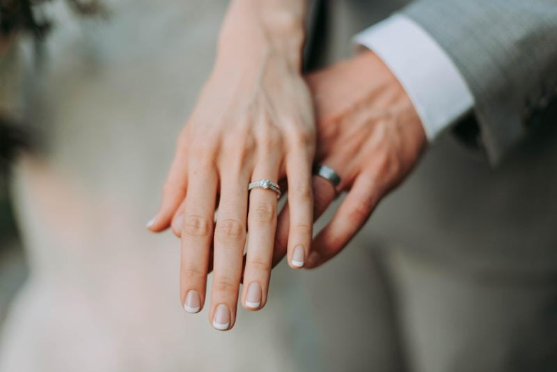
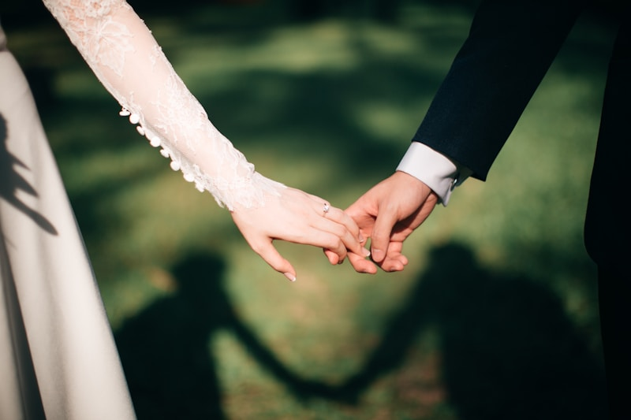

MAMarina & Alex
Sentimos que todo fue fácil
No queríamos posar durante horas. Quennie nos guió con calma y capturó justo lo que estaba pasando.
Solo bodas con intención
Especialidades
No queríamos posar durante horas. Quennie nos guió con calma y capturó justo lo que estaba pasando.
Hay detalles, familia, fiesta y silencios. Todo se siente elegante sin perder verdad.
Nos dio indicaciones cuando las necesitábamos y desapareció cuando el momento pedía intimidad.
Fotos naturales, colores cuidados y una selección que cuenta el día de principio a fin.
La gente aparece relajada, viva y presente. Esa era nuestra prioridad.
Las fotos no parecen una plantilla. Se reconocen los lugares, las personas y el ritmo de la boda.
Revisamos timing, luz, espacios importantes y prioridades para que nada esencial quede al azar.
Documentamos la boda con presencia discreta, dirección suave y atención real a los momentos espontáneos.
Recibes una galería privada con selección editorial, color coherente y descarga de alta calidad.
La experiencia está pensada para parejas que valoran la estética, pero no quieren que la boda gire alrededor de la cámara.
Trabajo con fechas seleccionadas por temporada para mantener una atención cercana antes, durante y después de cada boda.
Reserva tu fechaAntes de la boda alineamos horarios, personas clave y momentos sensibles para llegar con criterio.
La prioridad es que viváis el día. Las imágenes nacen de lo real, no de interrumpirlo todo.
Cuando toca posar, la dirección es breve, estética y fácil de seguir.
Edición limpia, cálida y consistente para que la galería no dependa de una tendencia pasajera.
Tendréis una comunicación clara desde la primera consulta hasta la entrega final.

Fotografías honestas, dirección amable y una entrega que respeta la atmósfera real de vuestra celebración.
Un briefing visual para tomar mejores decisiones de luz, horarios y espacios.
Una historia completa, editada para conservar fuerza emocional y coherencia estética.
Comunicación directa para resolver dudas y ajustar la cobertura a vuestra celebración.
Dirección creativa y fotografía principal
Selección, color y narrativa visual

Atención documental durante el día
Composición editorial sin perder la espontaneidad de las personas que queréis.
No todas las bodas necesitan el mismo ritmo, cobertura ni prioridades visuales.
Acepto fechas seleccionadas para mantener foco, presencia y calidad en cada entrega.
Al reservar recibiréis recomendaciones de timing, luz y momentos clave para que el día fluya con naturalidad.
Quiero reservar